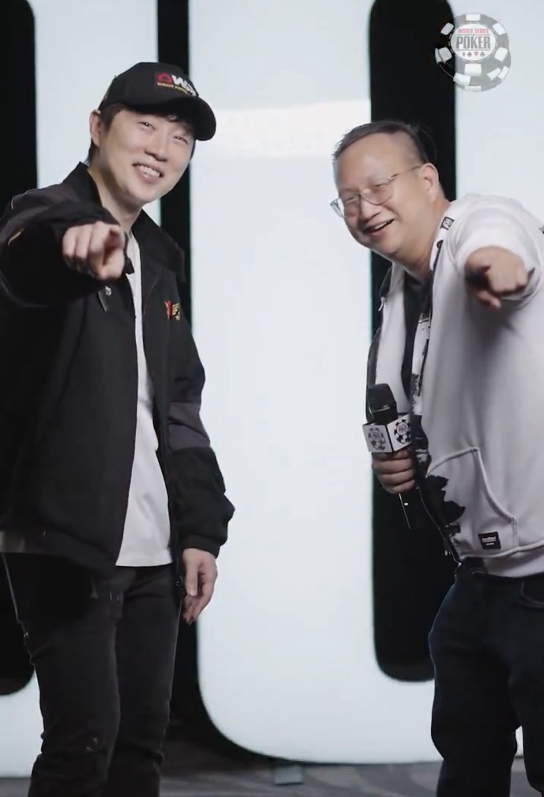
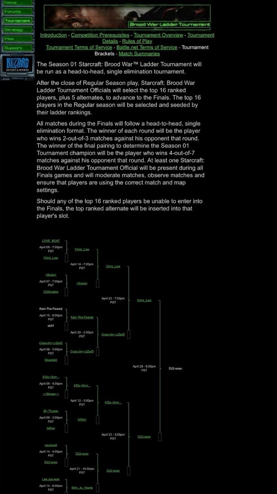
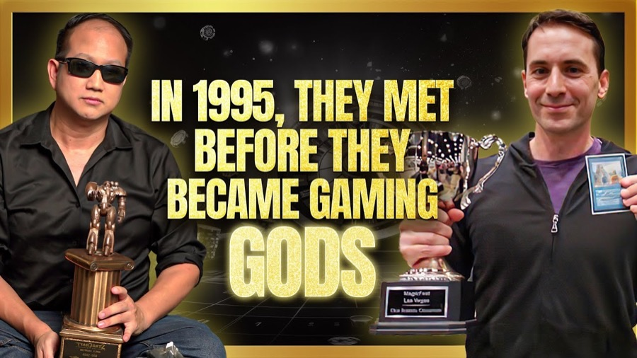
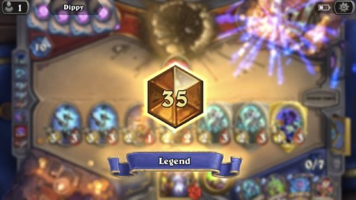
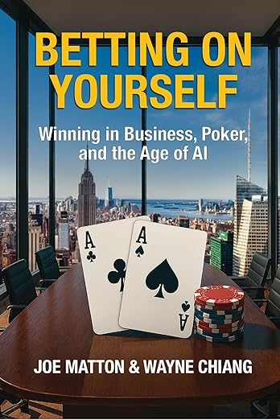
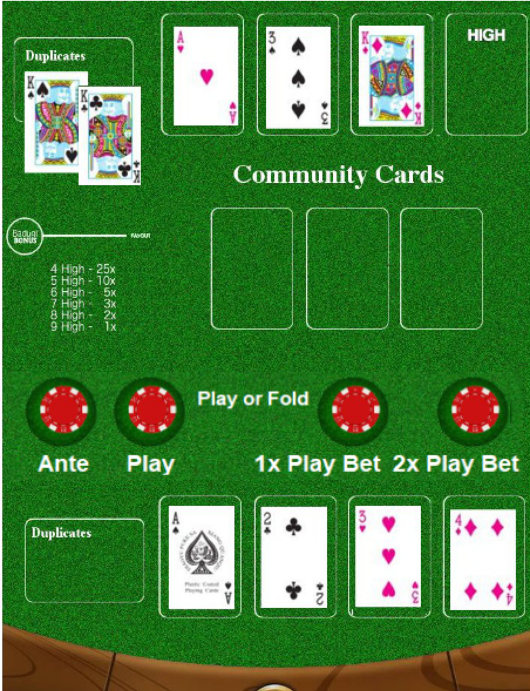

Live at the Bike
Co-owner and lead producer. Grew peak concurrent viewers from 2,500 to 8,800 and drove a 40% revenue increase. Hosted the PokerCraft Podcast with industry figures including Hellmuth, Negreanu, and Greenstein.
FELT // BROADCAST // TALENT
From math-driven blackjack bans and poker coaching to Live at the Bike and the World Series of Poker media desk.
Full-time WSOP Talent Manager since November 2025 after a trial summer. Oversees the official Vlogger Program—rewarding creators from Negreanu and Masato to StarCraft legend SlayerS_BoxeR, whom Chiang recruited into the roster after interviewing him at the 2025 World Series. Series stops include Prague, Cyprus, and the summer bracelet schedule.

Co-owner and lead producer. Grew peak concurrent viewers from 2,500 to 8,800 and drove a 40% revenue increase. Hosted the PokerCraft Podcast with industry figures including Hellmuth, Negreanu, and Greenstein.
Applied Hi-Lo and Hi-Opt 1 card-counting frameworks as a blackjack specialist—resulting in absolute table bans across major Las Vegas and San Diego properties. Also coaches poker players on decision-making, edge, and bankroll—the same macro skills that win on the ladder and at the felt.
BUILD ORDER // 1996–PRESENT
From Case’s Ladder to Blizzard’s first official Brood War world title—and the cast, community, and formats that followed. Scroll through each theater. Click a panel to cycle its theme.
THEATER 01 // STARCRAFT: BROOD WAR
#1 · Case’s Ladder · StarCraft Teams · 1998
April 28, 1999 — Blizzard’s official Battle.net Season 1 Ladder Tournament. Playing Random, D22-soso became the first Season 1 Brood War World Champion ($2,500).
In a legendary ~38-minute semi-final on Lost Temple against Guillaume “Grrrr…” Patry’s Zerg, Chiang rolled Protoss and broke a map 75% controlled by the swarm with a three-pronged assault—Reavers and Archons, Dark Templars and Corsairs, and a devastating center push.
Built GX StarCraft and Pimpest Plays—early esports highlight infrastructure—after Thresh and Calbear handed him the keys.
Primary sources: Blizzard Season 1 finals battle report · Liquipedia — Soso
INTERACTIVE // RANDOM RACE ROLL

THEATER 02 // COMMAND & CONQUER
Case’s Ladder · 1v1 & Teams · #1 · 1996
As SoSOWAC, captaining Team Synergy, Chiang topped the global Case’s Ladder individually and in team play—pre-StarCraft proof that the ladder was the contract.
Before official world titles were staged, rank was the contract—and the war room was a CRT.
THEATER 03 // WARCRAFT II / III
Warcraft II Teams #1 · Kali.net · 1997
Clan C4L claimed the Case’s / Kali.net team ladder peak. In 2004, the same competitive DNA resurfaced on Warcraft III Battle.net US West—FFA #1 and Arranged Teams #2.
THEATER 04 // MAGIC: THE GATHERING
Pro Tour · New York 2001 · Boston 2002
Two-time Pro Tour competitor—qualified for three—carrying the same ladder discipline from RTS into constructed and limited. The table was different; the reads were not.
From Case’s Ladder to the Pro Tour floor: another format, same refusal to play someone else’s meta.
THEATER 04 // SUBSECTION · CUBE DRAFT
Format origin · curated draft · “The Cube”
Chiang engineered curated draft pools that became Cube Draft—now a structural staple of the format. Public credit from Brian Weissman and Tom Martell for the majority of the idea.
Kind words from Magic legends Brian Weissman and Tom Martell—crediting him for lugging the original Super Monster Storage Box affectionately called “The Cube.”

THEATER 05 // HEARTHSTONE
Legend · Standard #35 NA · Wild #11 NA
Peak Rank #35 Standard NA, #11 Wild NA, and Top 32 in the Wild Open Americas (2018)—the same hand-reading muscle, new battlefield.

PRINT // KENDALL HUNT · OUT NOW
The playbook behind the career—decision-making from the ladder, the felt, and the age of AI.

Kendall Hunt · Dec 2025 · ISBN 9798319708007 · with Joe Matton
Co-authored with Fortune 500 executive and WSOP champion Joe Matton, Betting on Yourself: Winning in Business, Poker, and the Age of AI distills three decades of high-stakes decision-making into a single, repeatable system.
At its core is the WEB decision framework—a method for weighing expected value, edge, and bankroll the same way a world champion reads a board: fast, honest, and unafraid to commit when the odds are right.
PATENT ARCHIVE // TABLE GAMES
Protected game catalog—play the mechanics, then read the patents.
U.S. Pat. 11,117,045 · 11,731,032 · 12,005,342
Player is dealt four hole cards, splits them into two independent two-card hands, and plays both against a single board. Stable 4.06% house edge.
Deployed live at Great American Casino Tukwila (WA) via Maverick Gaming. Find live tables on the map.
Click the table to split four hole cards into two hands · Jump to Play 2 Hand Hold’em
U.S. Pat. 11,810,421 · 12,131,608
Single-draw lowball variant. Three community cards deal face-up; the player selects exactly one to complete their hand—leaving the remaining two to the dealer. Structured at a 1.22% house edge of total volume wagered.
Developed with Charles Chang and Joe Shipman, Ph.D.
Hover a community card, click to complete your Badugi Chase™ hand

TABLE OPEN // PLAY IN-SITE
Deal four, split two, one board—play the patented game right here.
TABLE FINDER // LIVE VENUES
Where the dual-hand game is live — explore the map, then open a table.
Live at Great American Casino Tukwila (WA) via Maverick Gaming — more venues as marked on the map.
PERSONNEL FILE // ABOUT
The full origin story—from Case’s Ladder to the Brood War throne, and the long game that followed.
The first official StarCraft: Brood War World Champion (1999, Random). #1 Case’s Ladder in Command & Conquer (1996) and Warcraft II (1997). First StarCraft caster. Cube Draft co-originator. Now the WSOP Talent Manager and inventor of five patented casino games.
The ultimate macro-manager traded his hotkeys for higher stakes—proving that whether you’re building a digital empire or a real-world legacy, the meta never really changes. You just have to be willing to bet on yourself.
Before the sold-out stadiums in Seoul, before multi-million dollar Twitch exclusivity contracts, and long before you could Google “Zerg Rush,” the digital frontier was a wild, uncharted landscape. In 1996, Wayne Chiang as “SoSOWAC” dominated 1v1 and teams on Case’s Ladder, ranking #1 at Command & Conquer: Tiberian Dawn. In 1997, he did the same for Warcraft II: Tides of Darkness.
March 31, 1998 changed everything. StarCraft was released—and esports would never be the same. Once again, Chiang hit #1 on Case’s Ladder in 1v1 and teams. Then he won the first StarCraft tournament against friend and eventual Chess.com co-founder Jay “Gadianton” Severson for $250, held at the legendary Magic: The Gathering hotspot Neutral Ground Mountain View—close to Google and Apple headquarters. Two $10 grudge-match victories over Severson followed. With nothing more to prove, Chiang was ready to move on.
Then, in September 1998, Severson let Chiang know the Professional Gamers’ League Season 3 was running the first international StarCraft tournament. Chiang missed sign-ups by one day. For a lesser player, that could have been a career-ending setback. Instead, he stated: “I want it all.” He set out to become the top media personality and content creator for StarCraft—taking to the microphone as StarCraft’s first-ever caster, and watching his rival and friend Gadianton take first place.
That early eye for talent and narrative caught the attention of esports heavyweights 5× FPS World Champion and Esports Hall of Famer Dennis “Thresh” Fong and Bob “Calbear” Colayco, who handed Chiang the keys to GX StarCraft on Gamers.com. D11-Thresh inducted “SoSOWAC” to “D22-soso” and “Gadianton” to “D23-Gadianton.”
D22-soso became the central nervous system of the community. He wasn’t just beating the best players in the world—he was translating their brilliance for the masses. He wrote battle reports of high-ranked ladder games, most notably battling rival Guillaume Patry. He set up Pimpest Plays: the original SportsCenter Top 10 for esports, creating the foundation for every highlight reel you see on YouTube today.
While most early pros relied on blistering early-game APM, when Chiang and Patry clashed they dragged each other into the depths of the late game—utilizing rarely-seen units like Ultralisks, Battlecruisers, and Carriers.
At the 1999 Brood War Season 1 Ladder Tournament—Blizzard’s first official World Championship— D22-soso did the unthinkable. In a game defined by extreme, singular racial specialization, he played Random. It was the equivalent of winning a scoring title while shooting ambidextrously.
In a legendary ~38-minute semi-final against Patry’s Zerg on Lost Temple, Chiang rolled Protoss. Facing a map that was 75% controlled by the swarm, he orchestrated a masterclass three-pronged attack: Reavers and Archons on the right, Dark Templars and Corsairs on the left, and a devastating push down the middle. He broke Patry, advanced to the finals, and defeated Chris_Low in a five-game final (Game 5 on Showdown, 35:37) to become the first StarCraft: Brood War World Champion—taking home $2,500.
Like a champion vacating the throne at the absolute peak of his powers, D22-soso eventually walked away. With the esports scene shifting entirely to South Korea and the dot-com bubble looming, Patry—four years his junior—was rapidly evolving. Choosing family, academics, and a grander vision for his future, Chiang stepped away from the keyboard to pursue a Computer Science degree at UC San Diego.
He didn’t stick around to watch his mechanics fade. He handed the torch to a new generation—then, as WSOP Talent Manager, brought StarCraft legend SlayerS_BoxeR into the Vlogger Program he runs, after interviewing him at the 2025 World Series of Poker.
Ultimately, StarCraft was never just a video game for Wayne Chiang. It was Chapter One. The ability to read opponents, calculate odds, evaluate raw talent, and design winning strategies didn’t retire in 1999. It evolved. The battlefield simply shifted from the pixelated maps of Brood War to the green felt of Las Vegas and the boardrooms of modern business.
Wayne “D22-soso” Chiang operates on a different battlefield. He is the Talent Manager for the World Series of Poker (WSOP), an inventor of patented casino games like 2 Hand Hold’em™ and Badugi Chase™, and co-author of the self-investment guide Betting on Yourself (Kendall Hunt, 2025). But long before he was shaping the modern poker landscape, he was pouring the concrete foundation for modern competitive gaming and content creation.
OPEN COMMS CHANNEL
Licensing, media, talent, and partnership inquiries—one channel for business, then socials and press assets below.